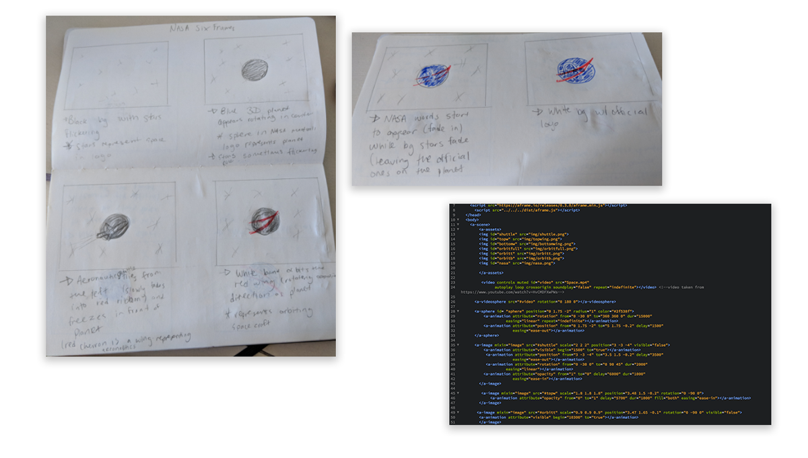

Choose a company and create a six frame animation using CSS to illustrate their logo. I decided to focus on NASA’s insignia logo.
I knew that I wanted to incorporate NASA into this project so I could work with an outer space theme. After researching the history behind NASA's several logos, I chose to work with NASA’s insignia logo (also called their “meatball logo”). The logo was created in 1959 during NASA’s second year. The blue circle represents a planet. The red wing represents aeronautics, which was the latest design in hypersonic wings when the logo was made. The white orbit represents space travel. Finally, the stars represent space. To keep with the project outline, I wanted to bring in each aspect of the insignia individually and animate it in a way that would illustrate what it’s significance in the logo is.
Using A-Frame framework, I created a sphere that moves to rotate behind the rest of the elements to represent the “planet” in NASA’s logo. Initially the sphere moves to a different part of the screen so the user is encouraged to follow it and see the rest of the logo play out. Next is the space shuttle that fades out to make the red wing in the NASA logo. An orbiting circle appears in between the red wing and briefly orbits around before locking into place. Finally, the NASA type appears in place as well.
I wanted to give the user the feeling of being immersed in space with the 360 video and experience the creation of the logo right in front of them. The finished project can be viewed either through web or using a VR headset. You can view the final project below (not suitable if viewing on mobile devices), or by clicking here (best viewed in Firefox).